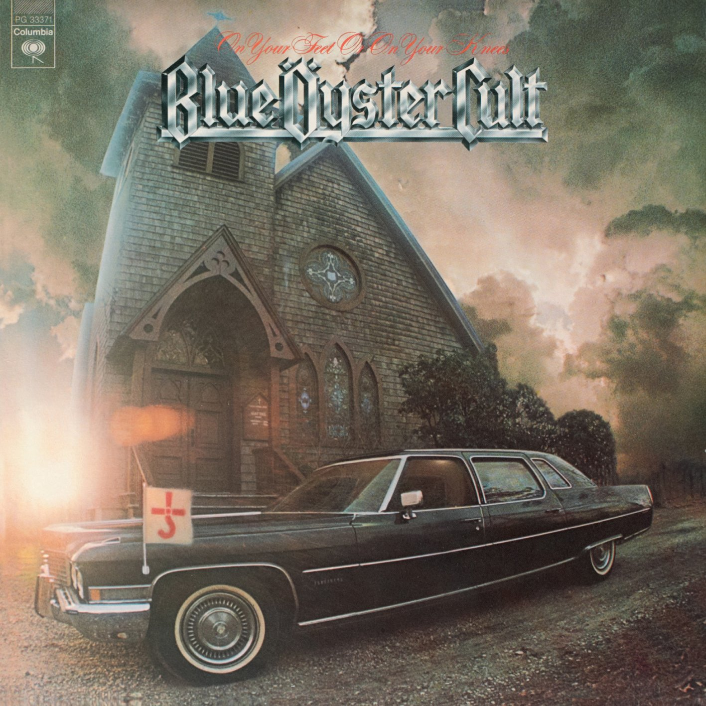

First Live Album
On Your Feet Or On Your Knees is the first live album for the band. Recorded from April to October of 1974 and released in 1975 as a double lp it features songs from all three of their previously released albums as well as a cover of Steppenwolf's Born to be Wild and I Ain't Got You. This was the band's way to show the world their live performance prowess. The album was certified gold by the RIAA for surpassing over 500,000 sales and peaked at number 22 on the US Billboard 200.
Agents of Fortune
Agents of Fortune is the fourth studio album. Released in 1976 as a single lp with 10 songs. The most notable song from this album is (Don't Fear) The Reaper. The cover art is based on the magician Jean Henry Servais LeRoy doing a similar pose with playing cards rather than tarot cards. This album includes many firsts for the band. Most importantly, it was their first album to go Platinum and placing 29 on the US Billboard 200. This is the first studio album to be in full color. It is also the first and only album for Allen Lanier to take lead vocals on a song. The one he sang is called True Confessions. Finally, it is the first and only album where Eric Bloom is not credited with the writing of any song. This album paved way for Buck Dharma to become more prominent with the lead singing role on future albums since he penned the hit song (Don't Fear) The Reaper.